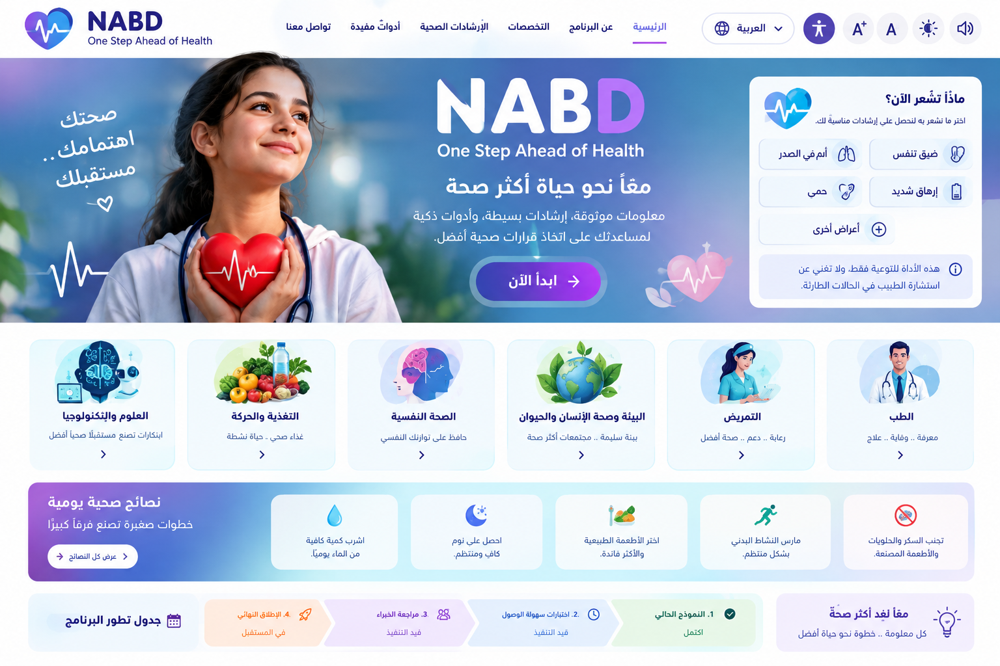

🩺
Medicine & Nursing
Body systems, prevention, first-aid awareness and when to seek help.
NABD helps young people organize a health concern, learn reliable basics, and understand an appropriate next step — without pretending to diagnose them.
Important: this prototype is educational and is not a diagnosis or a replacement for professional care.

The project focuses on the gap between noticing something and deciding what to do about it.
Structured questions organize what the user reports.
Short, understandable education for young people.
Small practical habits support everyday wellbeing.
Privacy, transparency and human oversight are central.
NABD Smart Guide uses transparent, rule-based logic to organize a next-step prompt. It is not an AI model, diagnosis, or medical assessment.
Submit the form to see a transparent, rule-based demo recommendation. No AI diagnosis is performed.
For emergencies or severe symptoms, seek appropriate local professional/emergency help rather than relying on this prototype.A regular sleep routine can support concentration, mood and wellbeing.
Regular fluids are part of basic wellbeing and needs can vary.
Age-appropriate activity can support physical and mental wellbeing.
Healthy coping strategies and asking for support can help when stress becomes difficult.
Keep a consistent routine where possible.
Choose enjoyable, age-appropriate movement.
Aim for varied foods rather than extreme restrictions.
Talk to a trusted adult or professional when a concern persists.
Browse learning areas for education and awareness. These are introductory topics, not professional advice.
Body systems, prevention, first-aid awareness and when to seek help.
Stress, emotions, healthy routines and asking for support.
How people, animals and ecosystems affect one another.
Biology, public health, data literacy and responsible innovation.
Balanced habits, hydration, sleep and enjoyable activity.
Inclusive communication, helping others and community awareness.
Study skills, research basics and exploring future pathways.
Privacy, checking sources and using technology responsibly.
A transparent progress plan helps users understand what is ready and what still needs work.
Responsive pages, basic learning content, accessibility controls and demo guidance.
Current demoTest with screen readers, keyboard-only use, captions, low vision and varied reading levels.
Next priorityHave qualified health and language reviewers check content, translations and safety.
Required before launchSecurity, privacy, clinical validation, user feedback and ongoing maintenance.
Future stageLook for qualified health organizations and check when information was updated.
Talk with a trusted adult or qualified professional if something worries you.
Try keyboard navigation, text resizing, contrast controls and read-aloud features.
Avoid entering names, addresses or other identifying details into a demo.
A guidance level cannot identify or rule out a disease.
This demo uses transparent rules and is not clinically validated.
Urgent situations need appropriate professional services.
A real version needs clinical review, testing, privacy/security assessment and oversight.